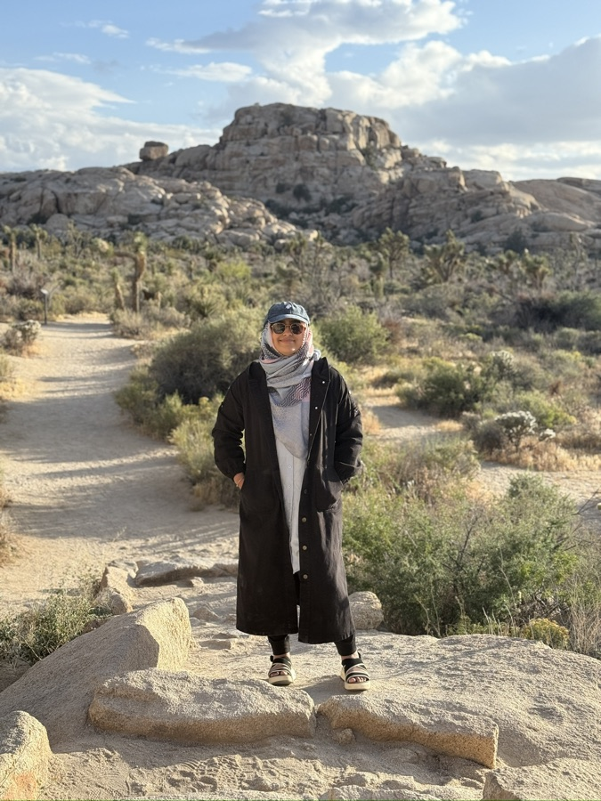

Case Studies · 2019 – Present
Hey, I’m Mehvash
Specialist in designing the systems that govern data at scale.
Over 8 years at Microsoft shaping UX across data governance, privacy compliance, and AI-powered security tooling. These four case studies document the arc — from Azure Purview's earliest governance foundations to designing AI agent observability for the post-Copilot enterprise.

Process
Process is Messy
I’ve learned that process isn’t as clean or even linear like I once thought it was. For me it boils down to these 3 key principles. Regardless of the scale and scope of the project, you’ll always see these present in my work, just at different capacities depending on the project. A team may not have the funding for a proper user study, but I can still get signals on usability. I may not get a detailed project spec with user pain points, but I can uncover them through rapid iteration and asking targeted questions with stakeholders. All of this is to say, my process is far from perfect, but regardless it is rigorous and comprehensive.
-
Principle 1
Deep User Understanding
-
Principle 2
Ideation & Collaboration
-
Principle 3
Research & Iteration